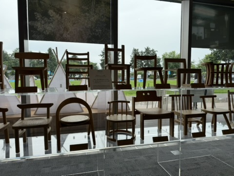
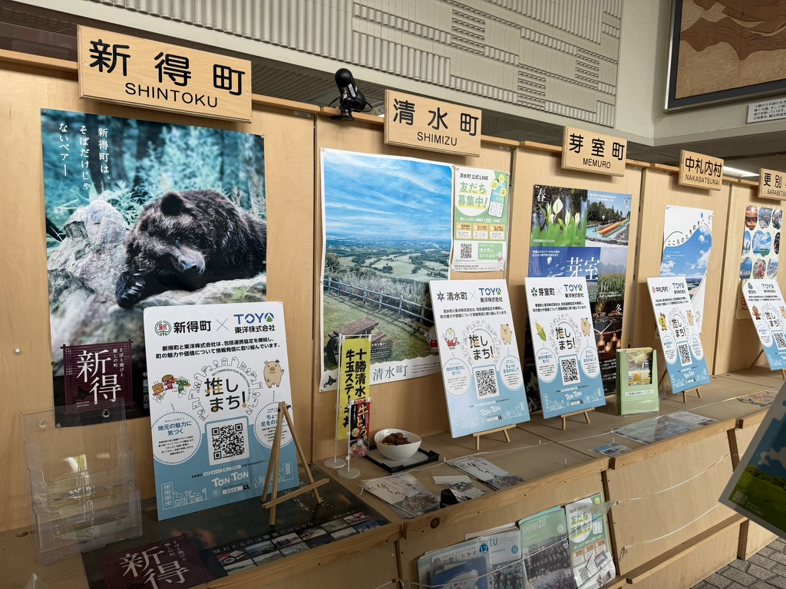
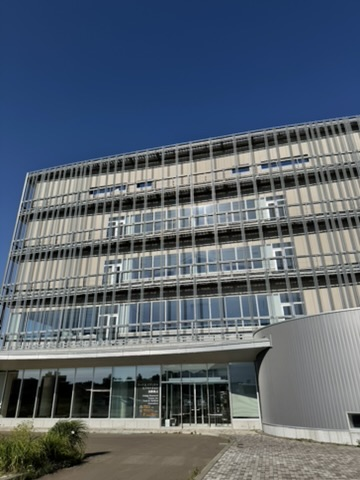
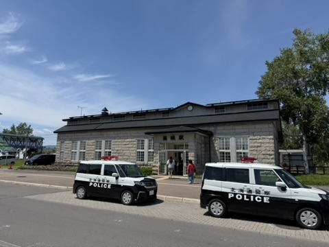
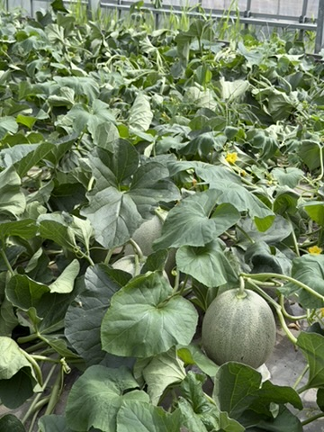

官方單位拜會與交流

- 14個振興局治理：北海道廣域設置14個振興局，與基層町村保持密切聯繫，共同解決創生問題。
- 科技與AI解決缺工：推動次世代半導體 Rapidus 計劃，輔以高中招生與4所專門學校培育人才，並以 AI 和數位轉型解決一二級產業人力短缺。
振興局的劃分與運作細節
因應北海道人口流失挑戰（預計於2050年下降至382萬人），全道劃分為14個「振興局」，直接派駐基層。其與保健局等跨局處密切合作，作為地方町村與道廳中央的即時政策對話管道，即時處理防災、民生與地方創生問題。
Rapidus 半導體人才與產業引進
2022年起積極推動 Rapidus 計畫，所需人才除了透過北海道大學，更與4所專門學校合作。道廳人員甚至親自進入一般高中，進行系統化培訓宣傳，引導在地青年就業。道內亦預計建置高達 48 處 AI 資料中心，以科技數位轉型（DX）克服少子化與大面積公共服務高成本的痛點。
專家交流與台日合作
國立臺灣大學社會學系特聘教授陳東升提問關於振興局與人才培育；大房食品代表提問食品產業國際化。日方回應，目前北海道水產品出口以亞洲為核心，並已在新加坡開設專門店進行市場魅力測試。經濟部政務次長何晉滄現場建言，未來北海道在台或在日舉辦大型活動時，可研議設置「台灣館」，並將合作架接在台日雙方的業者平台（如地方創生工作促進會），目前日方已與29個單位開展合作。

- 適疏與景觀保護：強調城鎮留白與內心餘白的「適疏」美學。制定美麗東川風景條例，建房需與町協定以融合景觀。
- 故鄉股東制度：將故鄉納稅轉化為「股東投資」，吸引30萬人次投資，回饋股東住宿與專屬活動，創造黏著關係。
東川人口概況與純淨天然水
截至2024年12月30日最新官方統計，東川町定居人口達 8,673 人，其中包含外國籍居民 535 人，外國人比例高達 6.1%，在少子高齡化的日本偏鄉堪稱多元共生奇蹟。全町面積 247.30 平方公里，全居民依靠大雪山旭岳積雪融化慢滲形成的天然地下水生活（湧水量約 4,600 公升/分），是北海道唯一沒有鋪設自來水管道的城鎮。水質富含礦物質，水溫長年維持 6~7 度，曾榮獲世界食品評鑑金獎及平成名水百選。
「東川股東證」與特別町民免稅優惠
東川町於 2008 年開創「東川股東制度」（故鄉納稅）。年度納稅收入達 46 億日圓，成為地方自主預算的四分之一。捐款 1 萬日圓以上的町外股東可獲頒「特別町民證」與「HUC卡（東川股東證）」，外地股東可以町民的特惠價使用町內所有公共設施。此外，股東每年享有免費入住町內指定住宿設施兩晚的福利，亦可以半價使用岐登牛森林公園小木屋，有效激發實質的「關係人口停留」。
53家官方合作夥伴與企業 CSV 實例
町役場於 2019 年與慶應大學SFC研究所合作啟動「官方合作夥伴制度」。截至2025年3月已與 53 家公司簽訂共創協議，活用企業資源解決地方課題：
1. **Canon Marketing Japan**：無償支援並借出相機給 1994 年啟動的「寫真甲子園（全國高中攝影賽）」。
2. **R-body**：利用人才交流計畫，派遣 2 名體能教練長期常駐東川町，指導居民體能，打造「健康之町」。
3. **岩塚製菓**：與 JA 東川合作，採用 100% 東川米開發「蓬鬆雪餅」零食，不含 28 種過敏原且包裝由町內設計師設計。
4. **CROSS PLUS**：與 Kuriya 合作，在川村カ子ト愛努紀念館監督下開發愛努圖案環保袋CSV商品，促進少數民族文化保存。

- AI農業特區與法規放寬：為解決人力荒，實施四大鬆綁：允許無人曳引機行駛公道、放寬無人機夜間與目視外飛行限制、放寬長距離通訊功率，並放寬農地變更變為科技企業基地。
- 地域振興協力隊：滿期 159 位青年中有 99 位定居十勝，定居率高達 62%，並活躍於行政、觀光與六級產業。
十勝驚人的旱作與乳業實力
十勝面積達 10,831 平方公里，人口約 31 萬，卻擁有高達 47.4 萬頭乳牛（人均1.5頭）。四大作物產量占全國比例：紅豆 64%、甜菜 46%、馬鈴薯 37%、小麥 27%，是日本最重要的糧食供應基地，自給率達驚人的 1295%。
智慧農業特區四大法規鬆綁
為了克服大面積耕作的嚴重缺工問題，十勝積極推動法規鬆綁：1. **無人駕駛曳引機**：修訂道路交通法，允許無人曳引機行駛公共道路以轉場；2. **無人機放寬**：放寬夜間及目視外飛行限制，用於大面積噴藥及防鹿/熊；3. **通訊發射功率**：放寬長距離通訊發射功率，降低控制延遲；4. **農地變更限制**：放寬農地限制，提供租稅優惠吸引科技企業設點。此外，台灣的火箭開發企業「jtSPACE株式會社」亦於2025年7月12日在北海道太空港（HOSPO）成功進行火箭發射試驗。
十勝品牌建立與產業招商
十勝食品製造業出貨額達3930億日圓，但因原料多直接運往首都圈，附加價值率僅22.1%（比日本平均低8%）。為提升利潤，19個町村聯手推廣「十勝」品牌，並實施「企業設廠促進補助金」，對新廠房設備投資補貼 4%（上限 1 億日圓），成功吸引外地大型食品加工廠設點。
學校單位交流與座談

- LRA 研究與十年養成：接受政府委託從事地方創生研究，自2015年起請企業推薦20~30歲青年進入大學，薪資原單位負擔，將年輕人串連合作，要求企業「等待十年」看見效果。
- HSFC 創業支援網絡：結合 22 所大學與高專，以及地方政府、金融機構建立相互支援平台。截至2025年育成171家企業，聚焦農業、永續與醫療健康，將 AI 實際導入農業與食品研發。
LRA 制度與大學社會擴展 (吉野正則部長)
北海道大學積極落實大學的「社會連結（Extension）」職能。2015年起創辦 LRA (Local Research Associate) 制度，請地方町村或合作企業推薦優秀青年（20~30歲）進入北大進行地方創生與社造研究。學費由委託方支付，薪水由原單位負擔。此制度不以短期商業成效為指標，而是呼籲企業與政府「等待十年」，讓這群青年在十年間建立深厚互信並開展跨域合作，真正留住地方發展核心人才。
HSFC 新創支援與 AI 導入一級產業 (小野部長)
新創創業本部於2023年成立，發起 HSFC (北海道未來創造新創企業培育支援網絡)，串聯道內 22 所大學、高等專門學校與主要金融、政府組織。截至2025年已培育高達 171 家研發新創企業。雖然培育名單中 AI 廠商占多數，但新創本部的核心策略是「將 AI 技術實際對接並導入傳統農業與食品製造」，以高科技手段解決傳統一級產業 the 痛點。
岩見澤市的地創示範委託
北大承接岩見澤市的委託，深入進行中型都市（約1萬人核心區，以農業與水產為主）的地方創生模型研究。之所以選擇該市，是因為其尺度具備北海道城鎮的代表性，且與地方首長具備深厚的互信，有利於將此模型推廣至其他町村。

- 台日企業搭橋：因東川町內企業在台灣有分公司，為吸引台灣人才而開啟交流，短期簽證學生以台灣最多。
- 役場多元文化課隸屬：編制 30 位教師，總員工 41 位，隸屬於東川町政府多元文化課，是日本少見由地方公部門運作的學校。
日本首所公立日本語學校的創立契機
東川町立東川日本語學校創立於 2015 年 10 月，隸屬東川町役場多元文化課，為日本第一所公營日本語學校，一年長期生約 120 名。開辦契機在於 1990 年代在東川專門學校留學的一位韓國青年，於 2007 年返回東川拜會町長，提議東川町可利用少子化閒置校舍招收韓國學生。經過實地調查，東川於 2009 年夏季開辦短期研修，接收首批 33 名韓國生，開啟了東川招收留學生歷史。
與台灣合作因緣及累計規模
應台灣各界與町內合作企業之要求，學校於 **2010 年夏天正式開始接收台灣學生**。截至目前為止，已累計接收來自全球（以東亞為主）的**外籍留學生超過 4,800 人**。除了日語學校，町內亦設有私立「東川國際文化福祉專門學校」，提供約 200 個日語系名額，並與周邊市町村合作開設護理系以培育稀缺的看護人才。
4大會館與完備住宿 (可容納 496 人)
為支持外籍青年在日安心學習，町政府精心投資建設了4個專屬的住宿設施，共提供 284 個房間，可容納 496 人：
1. **東川町國際交流會館**：108 間 / 可入住 182 名。
2. **國際交流會館**：142 間 / 可入住 164 名。
3. **Centpure住宿館**：19 間 / 可入住 60 名。
4. **東川生活體驗館**：15 間 / 可入住 90 名。
學校下午還會安排豐富的文化與戶外體驗，並設有獎學金與就業升學輔導，提供無微不至的支持。
JET 制度與 17 國國際化公部門
透過總務省 JET 外國青年聘用制度，東川町役場聘用了高達 **17 個國家、共 18 名外國籍職員常駐**（擔任 CIR 國際交流員、ALT 英語與排球/棒球指導員等），負責地方文化推廣與翻譯，使得人口僅 8,600 人的城鎮成為日本最國際化的多文化共生示範小鎮。
民間與產業單位參訪

- 公共休閒空間轉化：將廢棄手宮線舊鐵軌、北運河石造倉庫群活化，保留煤炭運輸歷史印記，轉型為居民與遊客共享的休閒步道與綠帶。
- 百年火車運行挑戰：博物館展示與駕駛百年火車（鐵馬號），核心挑戰在於零組件重新開發生產與資深技術人員的傳承。
舊手宮線鐵道的保存歷史
舊手宮線開通於1880年，是北海道鐵路的發源地，過去承載著將空知地區煤炭運往小樽港的重要角色。1985年廢線後，地方並未將其出售改建大樓，而是悉數保存，整修為全長 1.6 公里的散步綠帶，串聯起運河與石造倉庫群，將工業記憶完美融入當代市容中。
百年蒸汽火車「鐵馬號」的運行挑戰
館藏的「鐵馬號」蒸汽機車（1909年美國 Porter 公司製造）是活著的歷史。要在當代持續運作這台百年老車，最大的挑戰是「零件重新開模製作」以及「操作人員的技術傳承」。由於老火車零件已無市售，館方必須找合作精密金屬廠重新繪圖鑄造；而老司機日漸凋零，技術傳承成為館方重大課題。
歷史資產的商業文創轉譯
小樽博物館與當地土產、食品業者深度合作。由博物館無償提供館藏珍貴老照片與手宮線鐵道圖檔，供業者設計全新伴手禮的包裝與外觀，使產品融入濃厚的歷史底蘊，大幅提升商品單價與文化故事感。

- 鞋底病毒的極大風險：240萬遊客帶來的私有農地無序侵入，鞋底病菌可能使土地數年無法耕作。協會強調每次侵入都是高感染風險。
- 夏冬體驗三原則：夏天以導覽帶路不勞煩農家，付費給農家作為利用費；冬天讓閒置農民擔任導覽人，將雪地散步等農民興趣包裝成冬季外快。
Over-tourism 對私有農地的致命威脅
景點「藍池」爆紅使得年遊客由120萬暴增至240萬，但多為一日遊散客，對農村規矩不甚了解。由於美瑛美麗丘陵多為生產者的私有農地（無柵欄阻隔），旅客任意踩入拍照會毀損麥田，且最致命的在於鞋底會攜帶世界各地的「根瘤病菌」等病毒，一旦農地受感染，該土地將數年無法耕作，等同於 240 萬次的感染威脅。
農觀融合夏冬各三原則
**夏天（食農）三原則**：1. 使用生產者本物現場、2. 導覽全程由協會專業 Guides 負責不勞煩農忙的農家、3. 支付利用費給配合農家。**冬天（雪地）三原則**：1. 以農民為第一線導覽主體、2. 將農民冬天的雪鞋散步等休閒轉化為付費遊程、3. 直接增加農民冬季外快收入。
英特普莉特（解說）導覽員認定
為避免「哲學之木（因遊客踐踏破壞，農民痛心無奈砍除）」與「白樺林受損」的悲劇重演。觀光協會自建培訓認定，要求導覽員除導覽技巧外必須修習農業知識，扮演「地方事情的翻譯者（Interpretation）」，把無序的侵害引導為付費食農教育，化農業與觀光的對立為雙贏共存。

- 66年品種與接木栽培：為保留無法取代的頂級香氣與口感，JA夕張66年來不改哈密瓜品種，而是透過「接木栽培」與九州鹿兒島運來的蜜蜂天然授粉克服高溫病害。
- 精細人工操作：不採用大型智慧機械，側芽修剪與蟲害防治均由人工進入溫室處理。
經典品種堅持與氣候挑戰
夕張哈密瓜生產期為 150 天，北海道因冬天寒冷下雪且日照短，瓜苗無法採取離地栽培，一年僅能一收。目前栽種品種已維持 66 年，雖有不耐高溫、不抗病等缺點，但為維護獨一無二的果肉香氣與口感，JA夕張與85戶瓜農堅持不改品種，而是通過接木栽培克服病蟲害，並由人工每天巡視修剪側芽。
一株四顆與 12 週出貨排程控制
瓜農每株僅保留四顆果實以確保甜度與養分充足。果實長到第16天開始出現美麗網狀紋路，第45天收割。因收成後最佳賞味期僅 3 天，保鮮期極短。為了避免同時產量過剩導致市價崩跌，JA夕張通過 3150 棟溫室的精密育苗排程，成功將出貨時間平滑地控制在連續 12 週，穩定了產值與市場競爭力。最頂級的「皇冠級哈密瓜」一萬顆中僅挑出一顆，每顆常拍賣出上萬日圓高價。